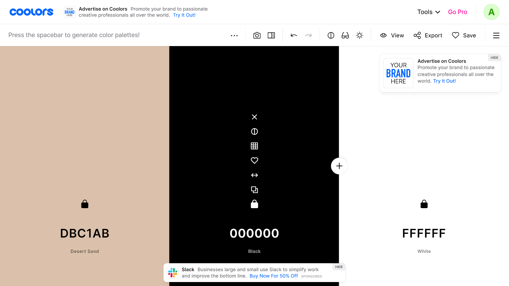

Color Usage:
Desert Sand will serve as the accent color for backgrounds and adding a touch of color and/or contrast where needed, while black and white will keep the site looking clean and legible.
Desert Sand will serve as the accent color for backgrounds and adding a touch of color and/or contrast where needed, while black and white will keep the site looking clean and legible.